Sponge Layer¶
- Larsen and Dancy (L–D type, 1983)
The sponge layer technique introduced by Larsen and Dancy (L–D type, 1983) is implemented in the code. In this method, the variables 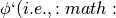eta, u, v`) are directly attenuated at every time step:
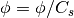
where 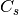 is a damping coefficient function defined by
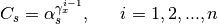
where 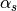 and 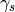 are two free parameters.  represents grid numbers. Chen et al. (1999) suggested that 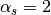, gamma_s = 0.88 - 0.92`, and 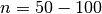. The length of the sponge layer is usually taken to be one or two times the typical wavelength. Chen et al also pointed out that the damping coefficients for optimal absorption are somewhat case–sensitive.
represents grid numbers. Chen et al. (1999) suggested that 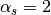, gamma_s = 0.88 - 0.92`, and 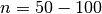. The length of the sponge layer is usually taken to be one or two times the typical wavelength. Chen et al also pointed out that the damping coefficients for optimal absorption are somewhat case–sensitive.
Recently, some problem was found in application of L–D type sponge layer for long–term simulations. The direct damping method combined with the TVD scheme generates sawtooth noises with a 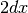 wave length. The sawtooth noises are usually not noticeable due to small magnitudes. However, they grow gradually with time and may become significant in a long term simulation. If this problem occurs, we suggest using the following friction–type or viscous type sponge layers. Using the combination of L–D and friction/viscous sponge layers may remove the sawtooth noises and also make the wave damping more efficient.
- Friction type and Diffusion type
The friction–type and viscous type sponge layers directly use the friction terms and diffusion terms existing in the model. The source term for the friction–type sponge can be described as
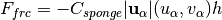
Note that depth  is added in the formula above to make the source term depth–independent in terms of the flux–type momentum equations. For the diffusion–type sponge, the description of diffusion term follows exactly the eddy–viscosity breaking formulation with spatial varying viscosity coefficients 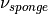. Both coefficients are smoothly ramped in space at the sponge layer boundaries. For example, for a sponge layer on the left end of the domain, 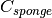 can be written as
is added in the formula above to make the source term depth–independent in terms of the flux–type momentum equations. For the diffusion–type sponge, the description of diffusion term follows exactly the eddy–viscosity breaking formulation with spatial varying viscosity coefficients 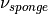. Both coefficients are smoothly ramped in space at the sponge layer boundaries. For example, for a sponge layer on the left end of the domain, 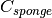 can be written as
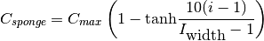
where 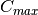 is the maximum value of used in the sponger layer. and 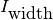 represent point number and the layer width in points. Similar expressions can be obtained for sponge layers on three other ends of the domain as well as the viscous sponge layer.
The width of the sponge layer is usually taken to be two or three wave lengths for the friction–type and viscous sponge layers. Narrow sponge layers can be used for L–D type sponge layer with a good efficiency but sawtooth noises generated by the method is a concern for long–term simulation.